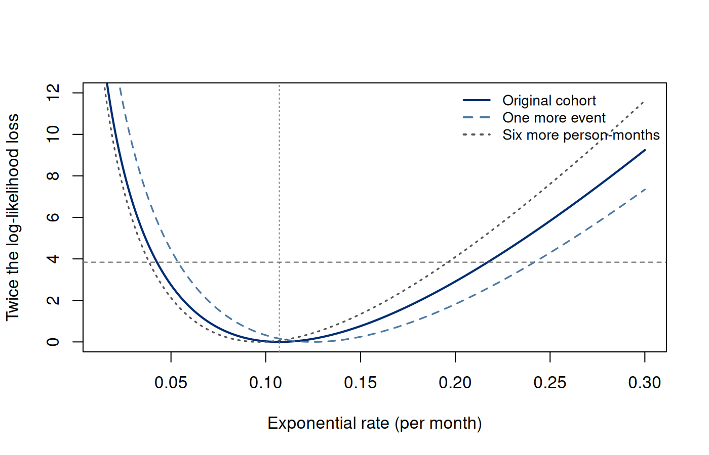

Chapter 5. Likelihood under incomplete observation
5.1 The observation determines the contribution
For the twelve-person cohort, Kaplan–Meier and Nelson–Aalen used changing risk sets without prescribing the full event-time distribution. In Section 3.2, a censored record contributed survival through its last observation. We now use that same observation logic to fit an explicit distribution and quantify uncertainty in its parameters. Exact events, intervals, and delayed entry will each change what the likelihood must represent. A regression model will then let the distribution depend on measured characteristics.
Let denote time from a clearly defined origin to one specified event. A population model has density , survival , and hazard ; for a continuous distribution, . An exact event at , an event known only to lie between two visits, and being event-free when follow-up ends reveal different sets of possible event times. Their likelihood contributions must express those different observations. Treating all three as events at a recorded numerical time changes the data, even if the resulting model converges cleanly.
The scientific target in this chapter is a parameter of the event-time distribution, or a function such as . We condition on any baseline covariates for now and suppress them from notation. Across-subject independence supports multiplication of individual contributions. The observation mechanism must also allow the event-distribution factor to be used without an omitted parameter-dependent selection term. These are substantive conditions. The act of writing a censoring indicator does not establish them.
| Observation | What is known | Contribution |
|---|---|---|
| Exact event | ||
| Right censoring | ||
| Left censoring | ||
| Interval censoring | ||
| Exact event after entry | , conditional on | |
| Right censoring after entry | , conditional on |
An exact continuous observation is interpreted through the density of an arbitrarily small measurement interval, rather than a positive probability at one point. Factors representing its width can be omitted if independent of . By contrast, an interval-censored record already describes a set with positive probability. Replacing it by its midpoint uses a density at a fabricated event time; shrinking an interval may make an approximation reasonable, but interval width and the shape of the density then matter. The likelihood is a function of for the fixed observed record, not a probability distribution over .
The observation rule also determines the measure with respect to which a likelihood is written. With exact failures and right censoring, there is a time coordinate and a discrete status coordinate. An event row has a density in time; a censoring row contains a survival probability multiplied by its own observation-mechanism density or mass. Omitting a parameter-free factor does not make these two rows the same type of observation. This is why a single formula such as for every recorded exit cannot represent the experiment.
5.2 Why right-censored time carries information
Section 3.2 derived the joint observation distribution for and . Under independence of continuous event and censoring times, an event record contributes and a censoring record contributes . Here describe random censoring. If the parameters range over separate spaces, the event-distribution factor is (5.1) A censored person contributes survival through their observed follow-up. Their later event time is not recovered, but their event-free time is useful. This explains why deleting censored records generally wastes information and can induce selection, even when censoring is independent.
For a fixed administrative closing time, the mechanism has a probability mass and is not described entirely by a continuous censoring density. Nonetheless an administrative censor at establishes and supplies the same event factor. Conditional independence can justify (5.1) within a correctly specified covariate model even when marginal independence fails. The selection experiment in Section 3.7 demonstrated that distinction. A pooled analysis does not inherit conditional independence by leaving out.
It is also useful to separate dependence of event and censoring times from shared parameters in their marginal distributions. Independent times with a censoring distribution that contains information about require a more careful full-likelihood discussion; discarding that information is not the same operation as omitting censoring that depends on the unobserved . We use independent, parameter-distinct mechanisms for the worked examples. We do not extrapolate this argument to arbitrary dropout or adaptive visits.
5.3 Events and exposure in an exponential model
Assume a constant event hazard . Then and . Define total observed events and exposure by and . Taking logarithms gives (5.2) Here is a score and is observed information; has this parameter-dependent meaning, distinct from the nonempty-risk-set indicator in the counting-process chapter. For and , strict concavity yields the unique interior maximum . This is the event count divided by person-time, not events divided by the number of participants. Its units are inverse time. At a specified horizon , invariance of maximum likelihood gives and .
In our cohort , person-months, and per month. The five-month survival estimate is and risk is . The Kaplan–Meier risk was . These are two estimators of the same event-distribution quantity under different shape assumptions. Their difference is not resolved by calling one parametric and the other nonparametric. The constant-hazard restriction is the reason the exponential estimate pools exposure across early and late follow-up.
If no events occur, the log likelihood is . Its maximum over the closure is at zero, and there is no finite interior solution. The formula is then undefined, so a plug-in normal standard error is not appropriate. A zero estimated rate does not establish a zero population rate. A one-sided likelihood analysis can still limit rates compatible with the observed event-free exposure.
5.4 A sufficient reduction also imposes a restriction
The exponential likelihood depends on the individual records only through and . That reduction is computationally convenient, but it also shows what the model cannot distinguish. Consider a new version of the same observation-time vector in which the month-1 event becomes a censor and the month-8 censor becomes an event. There are still six events and 56 person-months. The exponential likelihood is identical at every candidate rate, so its fitted five-month survival remains 0.585251. The rearranged records, however, contain fewer early events and more late events.
Under the same event-first convention, the alternative Kaplan–Meier five-month survival is , rather than the original . The script verifies this calculation independently. This difference is not a contradiction: Kaplan–Meier uses the locations of event increments, while a constant-hazard likelihood pools their entire exposure. Two observations can carry the same information for a parameter within one restricted family but different information about the broader shape of an event distribution. A sufficient statistic is sufficient for a specified model and parameter, not for every scientific question.
This gives a practical model check. Before reporting a pooled constant rate, inspect event timing, risk-set denominators, and a nonparametric survival or cumulative-hazard plot. An approximately straight cumulative hazard can support the plausibility of a constant rate over a chosen range, but sparse late follow-up may hide departures. The same-data comparison also shares sampling variation, so one visual discrepancy is not a calibrated test. A richer model or a prespecified shape test can formalize a particular alternative. It cannot establish independent censoring merely by improving fit to the observable records.
The alternative statuses define a thought experiment; they do not replace the cohort’s recorded outcomes. It isolates the restriction imposed by a constant hazard. When an analysis is reduced to events and total exposure, the reduction is justified within that model, while the timing information needed to assess the model has been set aside.
5.5 Curvature, uncertainty, and the role of design
The observed information at the interior maximum is . Its inverse motivates the large-sample variance approximation (5.3) The second equality is a delta-method result. A log-scale approximate 95% interval is . It respects positivity, but six events still make a large-sample approximation fragile. Transforming an interval into a valid parameter space does not establish its nominal coverage.
Expected information requires the distribution of , hence the observation design. For example, let independent event and random-censoring times have rates and , with administrative closure at . An observed event has probability (5.4) At , , , , these expressions predict about 46.59 observed events and information about 4658.70. The censoring rate matters for this expectation even though its likelihood factor was omitted from event-parameter maximization. Longer observation can improve precision by allowing more events, not by turning every censoring time into an event.
The same design connects the score to exposure. Since for , (5.5) It follows that . Thus the score equation balances observed events with their modeled expectation over observed person-time. It does not assert that the random ratio is exactly unbiased in a finite censored sample.
Without censoring, the sum of independent exponential event times is gamma distributed and supplies an exact chi-square pivot. With ordinary right censoring, is random and includes minima of times. Substituting for in that complete-data pivot generally does not retain its exact distribution. A fixed-event stopping design has its own sampling law; a fixed administrative closing design has another. Likelihood algebra and sampling calibration must remain separate questions.
5.6 A profile calculation that can be inspected
Rather than summarizing the likelihood by one curvature number, compare candidate rates with the maximizer: (5.6) Under regular large-sample conditions, retaining candidates with gives an approximate likelihood-ratio confidence set. This is still asymptotic, not an exact interval for six events. The retained set is asymmetric on the rate scale. Since five-month risk increases with , its endpoints transform in the same order; survival decreases, so survival endpoints reverse.
Run the complete R example
Dependencies: base R. This complete block includes the data, setup and calculations. Run it in a fresh R session. Short code excerpts above explain individual steps; this block supplies their shared setup. Figures and tables are written to a temporary directory.
Complete R example
# Complete R example. Synthetic data; no external files are required.
local({
previous.directory <- getwd()
example.directory <- tempfile("biomedical-example-")
dir.create(example.directory)
setwd(example.directory)
on.exit(setwd(previous.directory))
dir.create("generated",showWarnings=FALSE)
# Incomplete-observation likelihood examples.
options(digits = 10)
dir.create("results", showWarnings = FALSE)
dir.create("figures", showWarnings = FALSE)
cohort <- read.csv(text="id,time,status,known.at.5,event.by.5\nA,1,1,TRUE,1\nB,2,1,TRUE,1\nC,2,0,FALSE,NA\nD,3,0,FALSE,NA\nE,4,1,TRUE,1\nF,4,1,TRUE,1\nG,5,0,TRUE,0\nH,6,1,TRUE,0\nI,6,0,TRUE,0\nJ,7,0,TRUE,0\nK,8,1,TRUE,0\nL,8,0,TRUE,0\n")
D <- sum(cohort$status); W <- sum(cohort$time)
rate <- D/W
loglik <- function(lambda, d = D, w = W) d*log(lambda) - lambda*w
score <- function(lambda) D/lambda - W
info <- D/rate^2
se.log <- 1/sqrt(D)
ci.log <- exp(log(rate) + c(-1, 1)*qnorm(.975)*se.log)
cut <- qchisq(.95, 1)
deviance <- function(lambda) 2*(loglik(rate) - loglik(lambda))
ci.profile <- c(uniroot(function(x) deviance(x)-cut,
c(rate/1000, rate), tol=1e-12)$root,
uniroot(function(x) deviance(x)-cut,
c(rate, rate*10), tol=1e-12)$root)
risk <- function(lambda, t) -expm1(-lambda*t)
summary <- data.frame(quantity = c("events", "person.months", "rate", "observed.information",
"rate.se", "log.interval.lower", "log.interval.upper", "profile.lower", "profile.upper",
"survival.5", "risk.5", "risk.profile.lower.5", "risk.profile.upper.5"),
value = c(D, W, rate, info, rate/sqrt(D), ci.log, ci.profile,
exp(-5*rate), risk(rate, 5), risk(ci.profile, 5)))
write.csv(summary, "results/ch07-summary.csv", row.names = FALSE)
# Independent differentiation and maximization checks.
numeric.score <- (loglik(rate + 1e-6) - loglik(rate - 1e-6))/(2e-6)
fit <- optimize(loglik, c(.00001, 1), maximum = TRUE, tol = 1e-12)
stopifnot(D == 6, W == 56, abs(score(rate)) < 1e-12,
abs(fit$maximum-rate) < 1e-7, abs(numeric.score) < 1e-6,
max(abs(deviance(ci.profile)-cut)) < .002)
# Same D and W can hide different event-time patterns under the exponential restriction.
changed <- cohort$status; changed[1] <- 0; changed[12] <- 1
km5 <- function(status) {
t <- sort(unique(cohort$time[status==1 & cohort$time<=5]))
prod(vapply(t,function(x)1-sum(status==1 & cohort$time==x)/sum(cohort$time>=x),numeric(1)))
}
stopifnot(sum(changed)==D,abs(km5(changed)-15/22)<1e-12)
write.csv(data.frame(pattern=c("Original","Early event exchanged for late event"),
events=c(D,sum(changed)),exposure=c(W,W),rate=c(rate,rate),
km.survival5=c(km5(cohort$status),km5(changed))),"results/ch07-shape-comparison.csv",row.names=FALSE)
# Delayed entry example: condition on being event-free at A.
entry <- c(0, .5, .5, 1, 1, 1, 2, 2, 2, 3, 3, 3)
stopifnot(all(entry < cohort$time))
conditional.exposure <- sum(cohort$time-entry)
entry.rate <- D/conditional.exposure
write.csv(data.frame(id = cohort$id, entry = entry,
time = cohort$time, status = cohort$status,
exposure = cohort$time-entry), "results/ch07-entry.csv", row.names = FALSE)
# Mixed observed sets: exact 1.2, right-censored 2, interval (1,3],
# left-censored 1.5, and exact 4 after independent entry at 1.
mixed.loglik <- function(lambda) {
log(lambda)-lambda*1.2 - lambda*2 +
(-lambda*1 + log(-expm1(-lambda*2))) +
log(-expm1(-lambda*1.5)) + log(lambda)-lambda*(4-1)
}
mixed <- optimize(mixed.loglik, c(.0001, 2), maximum = TRUE, tol = 1e-12)
mixed.wide.loglik <- function(lambda) {
log(lambda)-lambda*1.2-lambda*2 + (-lambda+log(-expm1(-5*lambda))) +
log(-expm1(-1.5*lambda))+log(lambda)-3*lambda
}
mixed.wide <- optimize(mixed.wide.loglik,c(.0001,2),maximum=TRUE,tol=1e-12)
write.csv(data.frame(interval=c("(1,3]","(1,6]"),rate=c(mixed$maximum,mixed.wide$maximum),
max.loglik=c(mixed$objective,mixed.wide$objective)),"results/ch07-mixed-comparison.csv",row.names=FALSE)
write.csv(data.frame(lambda=seq(.01,1.2,length.out=200),
narrow=sapply(seq(.01,1.2,length.out=200),mixed.loglik),
wide=sapply(seq(.01,1.2,length.out=200),mixed.wide.loglik)),
"results/ch07-mixed-curves.csv",row.names=FALSE)
# Profile curves for changing what one observation establishes.
grid <- seq(.015, .3, length.out = 300)
regimes <- data.frame(regime = c("Original cohort", "One more event", "Six more person-months"),
events = c(6, 7, 6), exposure = c(56, 56, 62))
curves <- do.call(rbind, lapply(seq_len(nrow(regimes)), function(i) {
d <- regimes$events[i]; w <- regimes$exposure[i]; mle <- d/w
data.frame(regime = regimes$regime[i], lambda = grid, events = d,
exposure = w, mle = mle,
deviance = 2*(loglik(mle,d,w)-loglik(grid,d,w)),
survival.5 = exp(-5*grid), risk.5 = risk(grid,5))
}))
write.csv(curves, "results/ch07-likelihood-grid.csv", row.names = FALSE)
write.csv(data.frame(quantity = c("entry.exposure", "entry.rate", "mixed.rate", "mixed.loglik"),
value = c(conditional.exposure, entry.rate, mixed$maximum, mixed$objective)),
"results/ch07-additional.csv", row.names = FALSE)
# Expected information requires an observation design, not only observed W.
lambda <- .1; censor.rate <- .05; tau <- 8; n <- 100
p.event <- lambda/(lambda+censor.rate)*(-expm1(-(lambda+censor.rate)*tau))
expected.info <- n*p.event/lambda^2
write.csv(data.frame(n=n, rate=lambda, censor.rate=censor.rate, tau=tau,
event.probability=p.event, expected.events=n*p.event,
expected.information=expected.info), "results/ch07-design.csv", row.names=FALSE)
draw <- function() {
plot(grid, 2*(loglik(rate)-loglik(grid)), type="l", lwd=2,
col="#002D72", xlab="Exponential rate (per month)",
ylab="Twice the log-likelihood loss", ylim=c(0,12))
abline(h=cut,lty=2,col="gray40"); abline(v=rate,lty=3,col="gray50")
for (i in 2:3) {
d<-regimes$events[i]; w<-regimes$exposure[i]; m<-d/w
lines(grid,2*(loglik(m,d,w)-loglik(grid,d,w)),
col=c("#4C79A4","#555555")[i-1], lty=i, lwd=1.6)
}
legend("topright",regimes$regime,col=c("#002D72","#4C79A4","#555555"),
lty=1:3,lwd=2,bty="n",cex=.85)
}
cairo_pdf("figures/ch07-likelihood.pdf",width=7,height=4.5); draw(); dev.off()
png("figures/ch07-likelihood.png",width=1400,height=900,res=200); draw(); dev.off()
cat("D =",D," W =",W," lambda =",rate,"\n")
print(summary)
cat("Delayed-entry exposure =",conditional.exposure," rate =",entry.rate,"\n")
cat("Mixed-observation rate =",mixed$maximum,"\n")
capture.output(sessionInfo(),file="results/ch07-sessionInfo.txt")
cat("\nSelected numerical results\n")
for (candidate in c("reader", "summary", "summary.mc", "perf", "comparison", "route.comparison", "test", "tab", "exact", "workflow.ci", "coef.tab", "evaluation.table")) {
if (exists(candidate, inherits=FALSE)) {
value <- get(candidate, inherits=FALSE)
if (is.data.frame(value) || is.matrix(value)) { cat(candidate, "\n"); print(utils::head(value,8)) }
}
}
cat("R", as.character(getRversion()), "\n")
})
This excerpt shows a step inside the preceding complete R example; it uses that block’s data and setup.
D <- sum(cohort$status)
W <- sum(cohort$time)
rate <- D/W
loglik <- function(lambda) D*log(lambda) - lambda*W
loss <- function(lambda) 2*(loglik(rate)-loglik(lambda))
cut <- qchisq(.95, 1)
lower <- uniroot(function(x) loss(x)-cut,
c(rate/1000, rate), tol=1e-12)$root
upper <- uniroot(function(x) loss(x)-cut,
c(rate, rate*10), tol=1e-12)$root
risk.limits <- -expm1(-5*c(lower, upper))The helper loss() evaluates the likelihood-ratio
statistic
;
its name does not denote a decision-theoretic loss. The use of
-expm1(-u) calculates
accurately when
is small. Both endpoint searches bracket a root on one side of the
maximum. Evaluating
at the returned roots should reproduce the cutoff; plotting the profile
checks whether the brackets cover the relevant region. These are checks
of the computation, while the constant-hazard assumption is assessed
through event timing and scientific context.


Predict the direction of each change before studying the curves. With the same exposure, an additional event increases the fitted rate to . With the same events, six extra event-free person-months decrease it to . The profile changes in both location and shape. Merely adding six censored participants is not enough to predict the change: their observed exposure matters. The complete R example evaluates the same three likelihood profiles, so we can reproduce the comparison without changing the cohort.
5.7 Delayed entry conditions on having reached entry
We write for entry time in this likelihood development, the quantity denoted in the opening observation chapter. A person entering at must already have survived to . This is left truncation, distinct from left censoring, which observes an event before a threshold. Under independent truncation, conditioning on entry time and eligibility gives the event contribution for an exact event at , or for right censoring. The denominator removes the probability of surviving before the person could be sampled.
For exponential times the log-likelihood factor becomes (5.7) The exposure begins at entry, not at the original time origin. The event clock can still measure time since that origin; risk-set membership and observed exposure are what change. In the illustrative entry vector , all , the exposure is 37 person-months, and the fitted rate is . Counting the unobserved pre-entry time as follow-up would wrongly reuse 56 in the denominator.
This conditional likelihood identifies an event distribution only under its selection conditions and adequate overlap of entry and event-time support. If early disease determines when a participant presents, independent truncation may fail. Censoring independence after entry is another condition. We have changed the observation design in this illustration; we have not claimed that the original cohort had delayed entry.
5.8 Intervals are probabilities, not invented times
For an exponential model, observing contributes , and observing contributes . Their stable log forms are and . A new five-record example combines an exact event at 1.2, right censoring at 2, an event in , left censoring at 1.5, and an exact event at 4 after entry at 1. The complete R example maximizes the sum of these contributions directly. No artificial midpoint or common event indicator can express all five observations faithfully.
For inspection times fixed in advance, or otherwise ignorable for the specified event model, these interval probabilities supply the event likelihood. If visits become more frequent when latent disease worsens, the visit process may convey additional event information. Conditioning on the reported intervals does not automatically remove that dependence. We would then need to represent the inspection mechanism as well. The five records illustrate likelihood contributions, not a justification for using ordinary right-censoring software on interval-censored data.
5.9 A defensible likelihood analysis
Start by stating the endpoint, origin, observation scheme, parameter space, and independence conditions. Verify units and status coding, inspect the log likelihood over plausible parameter values, and check optimization against a simpler case. Numerical convergence means an algorithm met a criterion; an interior maximum requires a mathematical or numerical comparison with boundaries and alternative solutions. When uncertainty is reported, say which sampling approximation calibrated it.
Score, Wald, and likelihood-ratio tests are related large-sample procedures, not a universal ranking of scientific reliability. Their agreement in a small example does not verify the model. A rate estimated in a previous study is itself uncertain; testing a new cohort against that estimate as though it were an exact population constant omits the previous study’s sampling error. Finally, a well-fitting event model cannot repair a false observation assumption. Chapter 6 adds covariates and compares several distributional shapes while retaining this likelihood logic.
5.10 Exercises
Likelihood contributions follow observed sets. Let have an absolutely continuous distribution with density and survival . Under ignorable observation, derive contributions for: an exact event at ; ; ; and with . Under independent truncation at entry and eligibility , derive the exact-event and right-censoring contributions for assuming . Identify which contributions are densities and which are dimensionless probabilities, and distinguish left censoring from left truncation.
Information depends on follow-up design. Let independent people have , independent dropout and fixed closure , with , and . Interpret as no random dropout. Derive the observed-event probability, expected event count and expected information for . Evaluate them for , , , . Compare the limits for and , and explain why realized exposure alone does not determine expected information.
Interior and boundary uncertainty. For independent exponentially distributed event times with rate and independent, parameter-separated right censoring, the twelve-person cohort has events and person-months. Derive the MLE and form approximate 95% log-rate and profile-likelihood intervals using the one-degree-of-freedom chi-square cutoff. Transform both to five-month event risk. Explain why replacing by in the complete-data gamma pivot does not generally make an exact interval. Describe the maximum and curvature problem if but .
Entry changes exposure. Use the twelve-person cohort with observed follow-up months and event indicators , in participant order A–L. Everyone enters at zero. Same-time events are counted before censoring; a censor at establishes . Now give participants A–L entry times months, all below exit times. Under independent truncation and independent right censoring after entry, derive the conditional exponential likelihood and fitted rate. For an entrant at month 2 censored at month 6, compare the correct factor with the factor that ignores entry. State the support and selection assumptions needed for interpretation.
A likelihood for mixed observations. Assume independent subjects with common exponential event rate and ignorable inspection/censoring. Observe: an exact event at 1.2; right censoring at 2; an event in ; an event before or at 1.5; and an exact event at 4 conditional on independent entry at 1. Derive the log likelihood, obtain its numerical maximum, and check the interval contribution using both a difference of exponentials and a stable log form. Replace by , keep all other records fixed, and recompute the maximum. Explain why widening the observed set does not by itself determine the direction of the fitted rate.